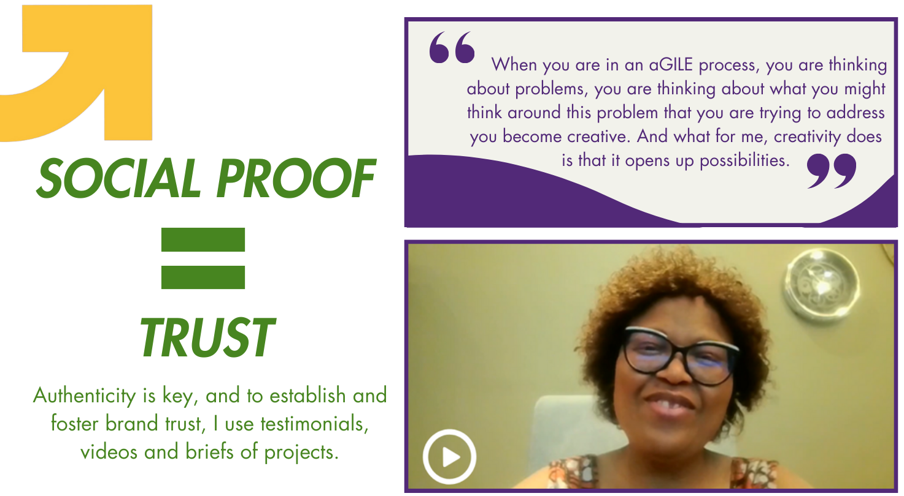
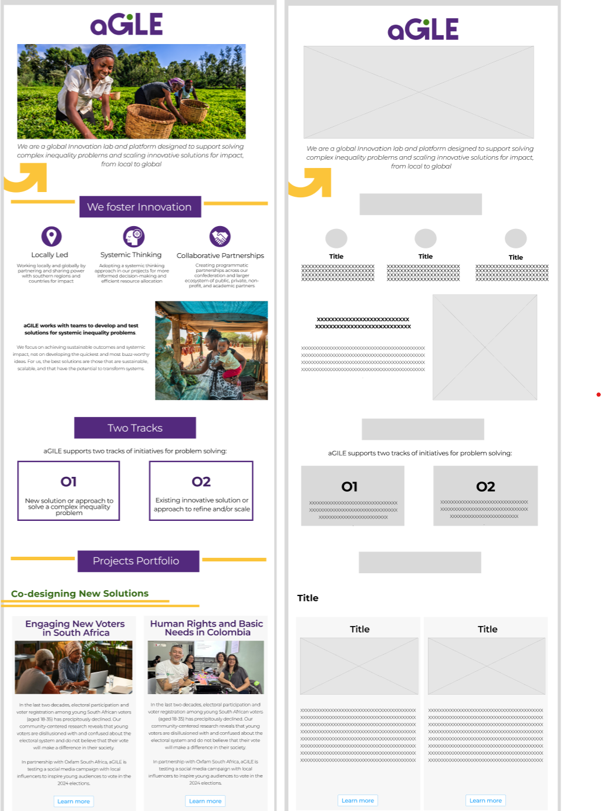

Stage 1: Defining a clear vision
Having an online presence is an essential communication asset, especially for the nascent aGILE lab.
As the design intern for aGILE, my communication projects include creating a captivating and informative landing page.
In defining a clear vision, it was first important to identify aGILE’s how, why, and what. Through audience mapping, I identified our key audiences.
- Define: Identifying the current and target audiences
- Relationships: Mapping the relationships of audiences within the stakeholder ecosystem
- Value Exchange: Separately assessing the influence and value between aGILE and key groups

A snippet from the audience map with a focus on partnerships with knowledge institutions
Stage 2: Scope of Ideation
During aGILE's annual retreat, I led a website ideation session with the team and Oxfam's Public Engagement team using mind mapping.
The discussions explored the crucial elements needed for a effective and informative website.
Who should be the website's target audience?
Given aGILE's priorities on fundraising, the website will be mainly designed for donors.
What are the pros and cons of single vs multipage?
A single-page provides a seamless experience, while a multipage structure offers better organization of different initiatives.
Given aGILE's variety of projects, we decided on a multi-page.
What information should be included?
Drawing on their needs, each participant shared content they wanted on the site.
Our next goal was figure out how to balance informativeness with user engagement.
What are aGILE's marketable differentiators?
There are many innovation labs, but aGILE is unique in its focus on co-creating solutions through decolonial principles.
Articulating this value proposition is important to communicate on the website.
By the end of the retreat, we had not only outlined a roadmap for the website, but also fostered a sense of purpose among the two teams on our vision and strategies.

Stage 3: Brand Identity
As aGILE sits within its parent Oxfam, I worked closely with PE to develop aGILE's brand identity while meeting Oxfam guidelines. Certain elements such as typography had to be Oxfam specific to maintain consistency.
Stage 4: Written Content
People skim with websites and it is easy to complicate a message. The goal is to only use content that will has an impact. I prioritized enough information to convey aGILE's offerings while being crisp and direct. 
Stage 5: Prototyping
With the scope well-defined, it was time to strategically organize content to ensure a cohesive and engaging user experience.
Using Figma,
I created a series of wireframes that experimented with different flows of information.
The wireframes were designed with understanding of Oxfam's capacities and current CMS. I went through Oxfam site to get inspiration and understand
the limitations.
With support from the Web Adminstration public,
I used Wagtail CMS for the site's back end.

Stage 6: Testing and Future Iterations
With the first draft created, I got feedback and suggestions from the stakeholders involved:
the aGILE team and advisory group, and the Innovation at Oxfam network.
Working with the Web team, I refined the design based on testing, make changes to improve usability and navigation.
Some of the suggestions from the feedback included:
- Having a separate "About Us" page to build rapport with viewers
- Including a "In the News" section to highlight recent stories as we build aGILE's work within Oxfam
Next Steps
Reflection
It is deeply exciting to learn from and be involved in the early stages of a new team as it articulates its values and experiments with new opportunities.
I enjoyed having this opportunity to contribute to the decision-making process and the team's overall direction. I was also able to draw upon my computer
science skills and web administration intern experiences at Smith College’s
Conway Innovation & Entrepreneurship Center
to create aGILE’s page.
Given that the team is spread across different regions around the world, it was challenging at times, to maintain consistent communication.
But by emphaszing the communications we currently have of weekly check-ins and workspace chat, we met our website goals as we work to further
improve coordination and collaboration.